これまでの大学生活の中で留学を含め、海外の複数カ国に渡航したことあるので、その渡航記を書きます。今回は特にスペイン留学中
また、おすすめポイントも記載していきます！
情熱の国と言われ、多くの有名な芸術家を輩出したり、サッカーが盛んなことでも有名。スペイン料理は個人的には日本の料理の次にうまい。観光業がとても盛んなため、どの地方に訪問しても綺麗な街並みやご飯、美術館・博物館など有名な観光スポットがある。国民もすごく気さくな人が多い。
マドリードの郊外に留学し、休日などにマドリード都内の方に遊びに行っていた。また、2019年の暮れには友達が来てくれて、一緒にマドリードで遊んでいた。その中で実際に行ったおすすめスポットを紹介する。
この写真は11月ごろの「Plaza de Cervantes」。この公園の横に住んでいた。11月ではあるが、日本と比べ温暖な気候のため、日本の春のような気候。そのため写真にあるように色とりどりの花が咲く。ちなみに、この公園の名前の由来はドンキホーテの作者、セルバンテスの生家がこの公園の近くにあったためである。
ドリード市内の中心にある建造物。5つのアーチを備えた新古典主義様式の凱旋門。マドリードの一つの有名な観光地として知られ、僕が訪問した時も、中国人や他ヨーロッパの人たちが写真をとっていた。夜景とともに、ライトアップされると綺麗。
アルカラ門のすぐ近くにある広大な公園。昼間にはカップルがボードに乗っていたり、ジョギングをしていたり、犬の散歩をしていたりなどをしている人がたくさんいる。大都会にこんなに広大なかつ緑の広がる公園があるのも珍しいのでは？都会の喧騒に疲れたら、散歩してリラックスできる場所。
サンティアゴ・ベルナベウは世界で最も有名なサッカーチームの一つであるレアル・マドリードのホームスタジアム。サッカーを7年間やってきた僕からすると聖地のような場所。（ちなみに、レアルのライバルであるバルセロナのファンだがそれでも感動した。）レアルの熱狂的なファン（クラブ会員）の横で観戦していたが、応援に対する熱量がすごすぎる。70歳くらいのおばあちゃんがびっくりするくらいの声の大きさで応援していることに、いい国だなぁと思った。
スペイン第2の都市。観光地としてすごく有名。バルセロナといえば、FCバルセロナというサッカーチームのホーム。カタルーニャ地方にある都市。街ではスペイン語とカタルーニャ語が行き交うが、地元の人は基本的にはカタルーニャ語を話したがる。
カンプ・ノウはFCバルセロナのホームスタジアム。収容人数は10万人と世界最大級。バロンドール最多受賞のメッシがいる世界でも最も有名なチームの一つ。個人的にはすごく応援しているチーム。ちなみに、直接観戦した試合でメッシがハットトリックを決めた。
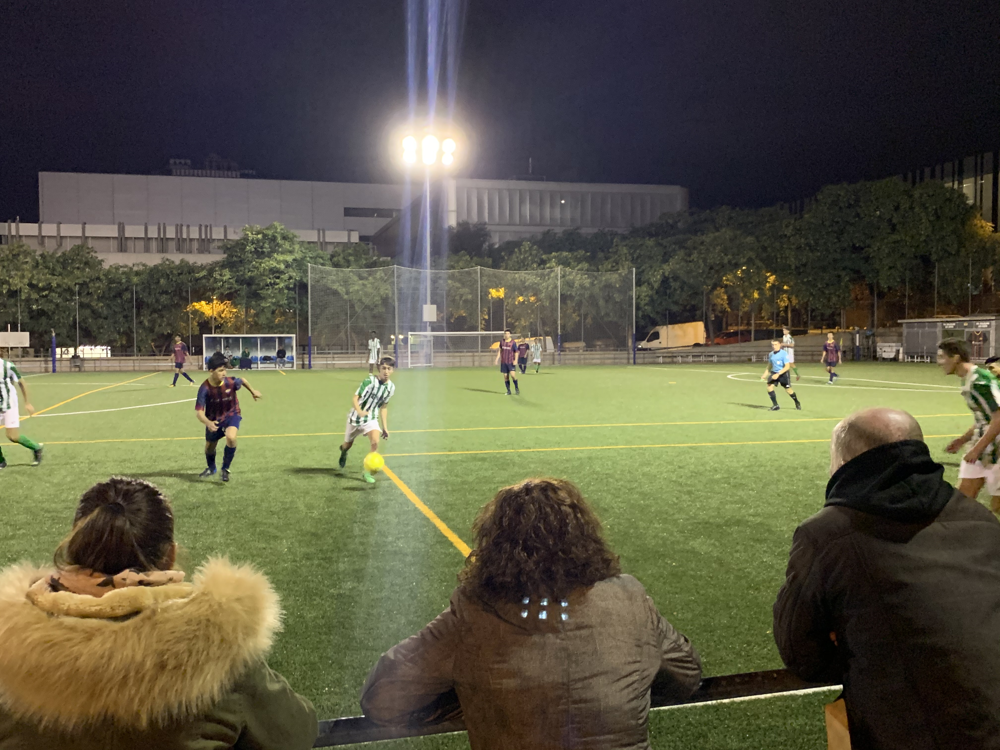観戦に行った時に、バルセロナのアカデミー年代が試合をしていた。FCバルセロナはラ・マシアと呼ばれるアカデミーも有名。現在日本代表の久保健英選手もラ・マシア出身。ここで久保選手も練習していたかも？
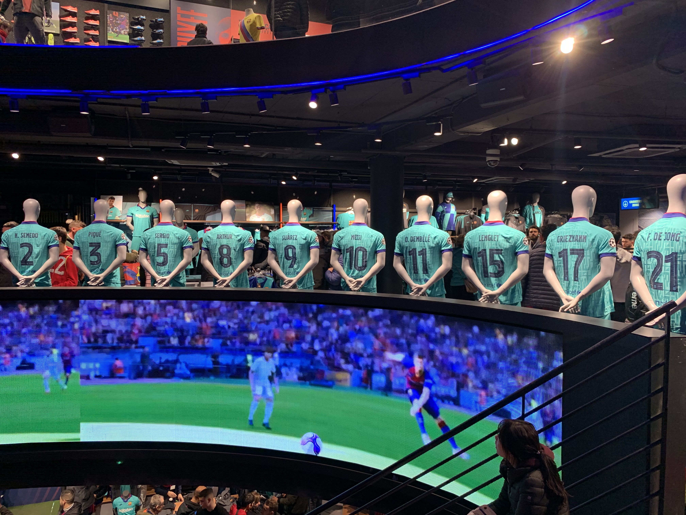スタジアムに併設されているショップ。何時間も滞在できるほど感動をした思い出がある。
ガウディが設計図を書いた現在も建造中の世界遺産。精密な彫刻で建物等に初めて感動するほどの壮大な建造物。バルセロナの街の至る所にガウディの建造物がある。2枚目の写真は、サグラダファミリアの目の前に池があり、そこに映る逆さサグラダファミリアは生でみるとさらに綺麗。
スペイン料理といえば「パエリア」。スープに浸しているため、スープの味が染み込んでいて絶品。他にもスペイン風オムレツ「トルティーヤデパタタス」というのもおすすめ。
スペイン南部地方のことをいう。スペインの中でも温暖な気候で、12月の下旬に行ったにも関わらず、半袖半ズボンで過ごせるほど。景色もすごく綺麗。
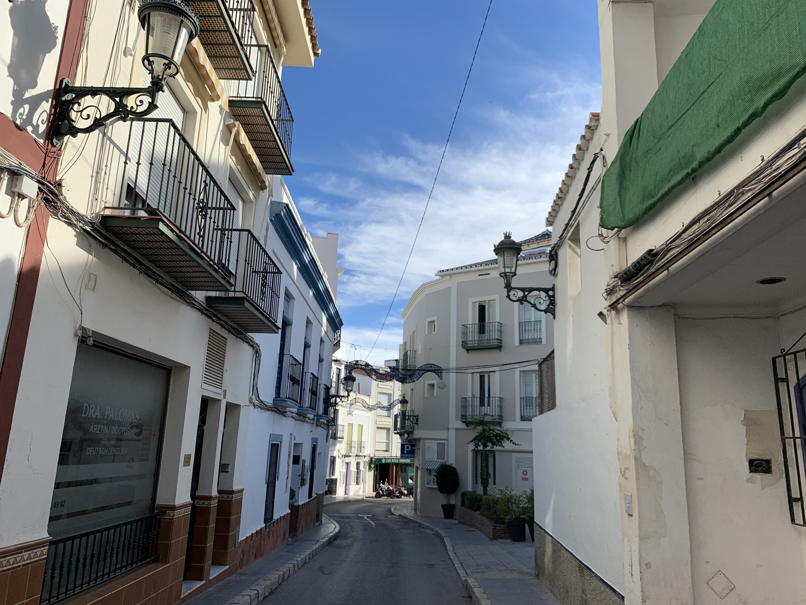白い街と言われるネルハという街。ヨーロッパのthe綺麗な街として連想されるような街。
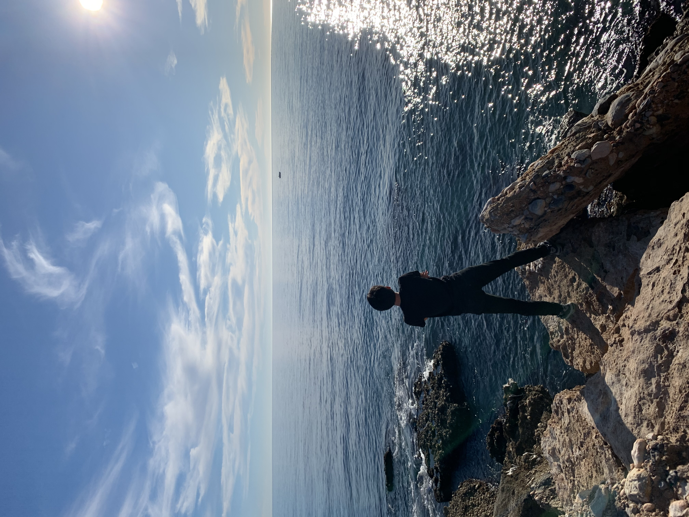アフリカ大陸が晴天だと見れる。ちなみに、写真ではわかりずらいが、この日もアフリカ大陸を見ることができた。ビーチでサーフィンをする人も12月なのにいたくらい温暖な気候。スペインに訪れたならぜひ行って欲しいところ。
友達と年越し旅行の一つとして訪問。ラテン系もあってかスペインと同じような街並み。人もおおらかで気さくなイメージ。イタリア語はスペイン語と似ていて、初めて聞いたイタリア語も少し理解できた。
ご飯として、やはりパスタとピザはすごく多い。ファストフードのパスタもあって、日本にはなかなかない文化。ちなみに3ユーロほど。レストランで食べるパスタ・ピザは高いけど絶品級。
偶然通りかかったら見つけた観光名所。周りには人が多すぎて、身動きが取れないほど。正直感動は少なかった。。。
イタリアでも最も有名な世界遺産の一つ。ジャンパーという映画で中の映像が流れたので、中の映像はそちらで確認してください。もちろん観光客も多かったが、観光客を狙った詐欺やスリも多かった。観光に来ていた日本人夫妻と仲良くなったが、その人たちも財布全てスラれたそう。
夜行バスで行ったため日の出の時間に到着。街並みと朝日の組み合わせがすごく綺麗
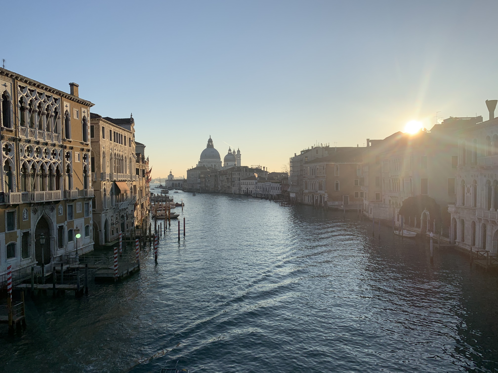 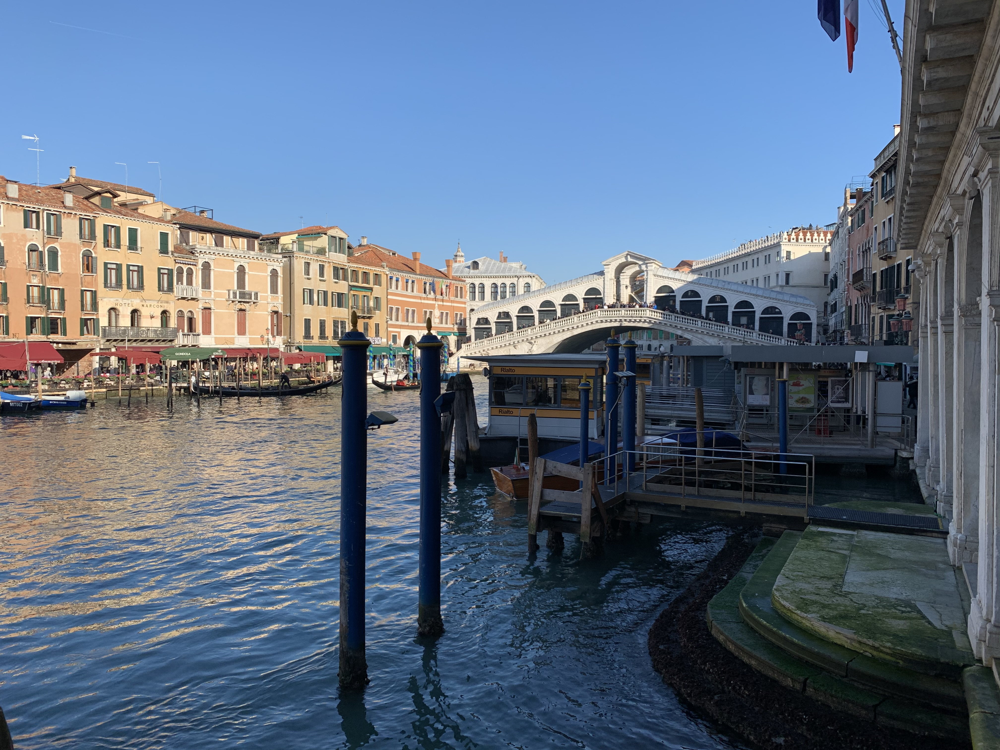 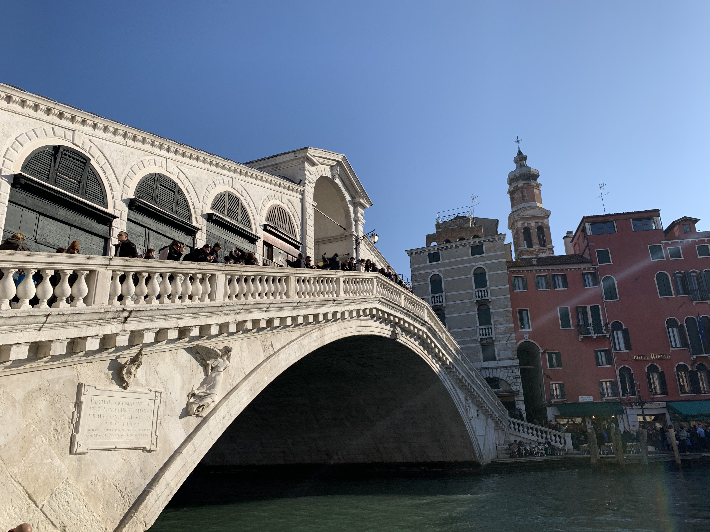 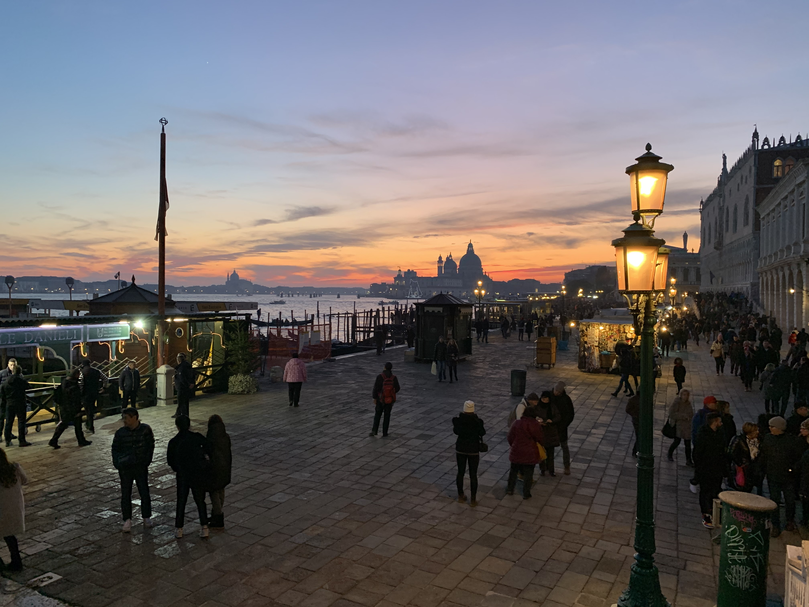映画などでもよく撮影地になるヴェネツィア。よく映画で見る仮装パーティーの格好をした人も夜にはみかけた。ゴンドラに乗ろうと思ったが高すぎる。一回乗るにの1万以上するのことも。ぜひ一度乗ってみてたいところ。
年越しに友達の留学先に訪問。
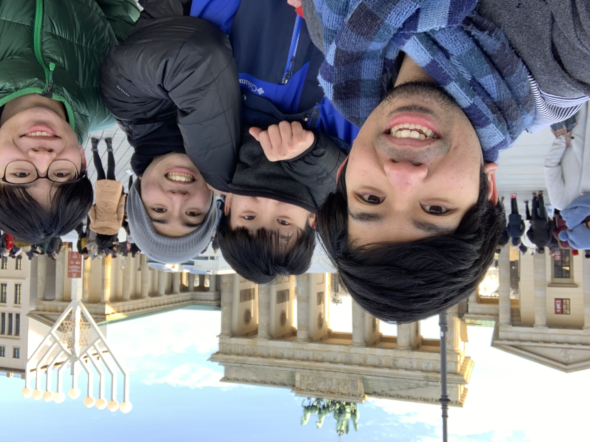 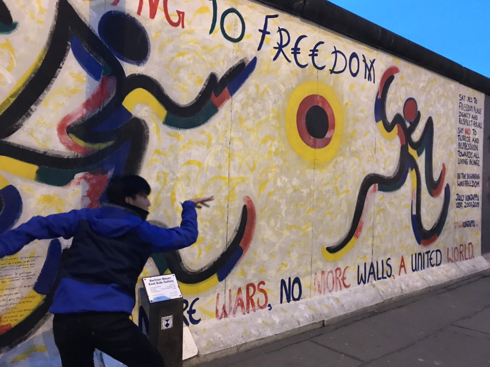 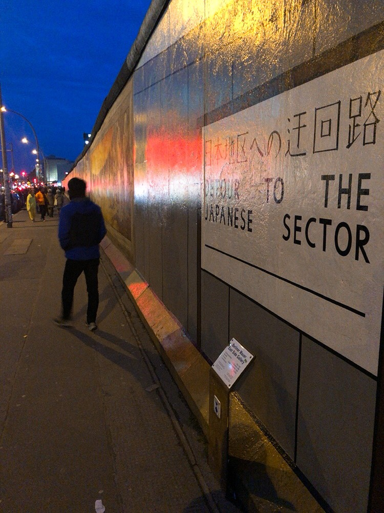 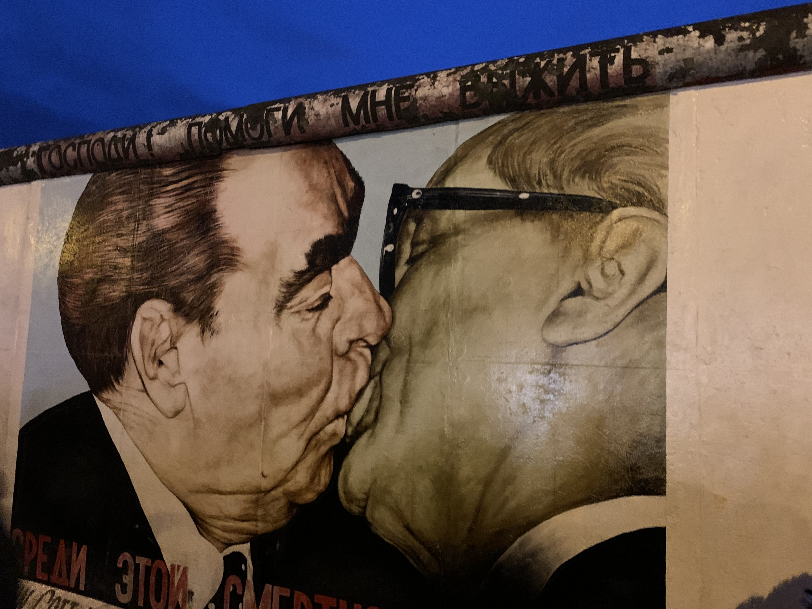ベルリンといえば、やはりベルリンの壁。すごく長い壁だった。というかスペインの写真と比べると一目瞭然だが、気温が低すぎて本当に寒かった。だから、ベルリンの壁だ！と思いつつも寒さを耐えるのに必死だったことを覚えている。冬に行く場合は防寒具を忘れずに。
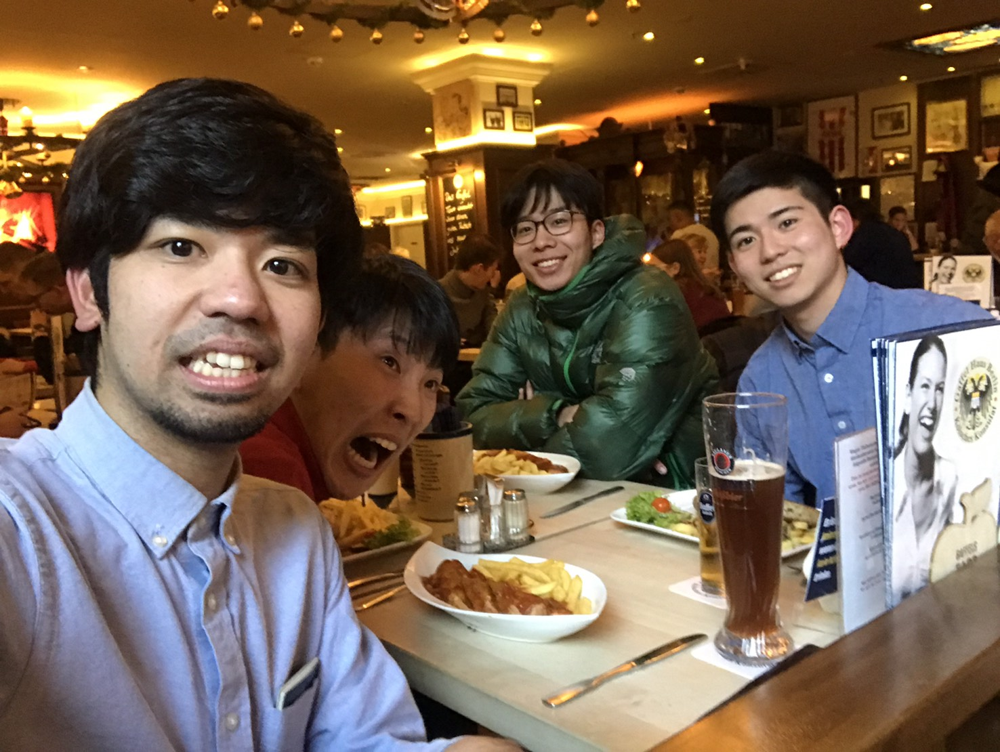ドイツといえば、やはりビールとソーセージ。それまでビールが苦手だった僕が、ビール好きになるほどドイツのビールはうまかった。麦の味がすごくする。ぜひ一度味わって欲しいもの。
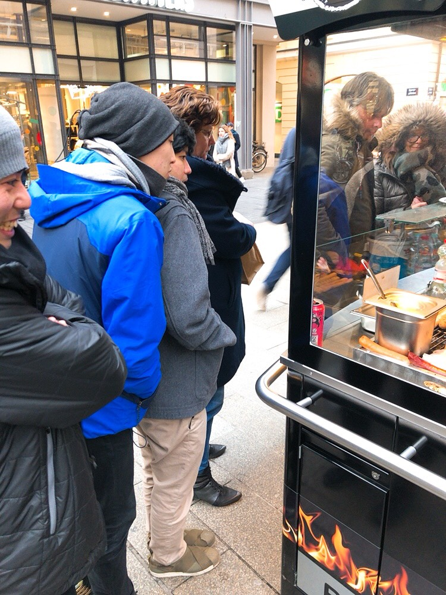ソーセージの屋台がそこら中にある。4日間の滞在だったが、1日あたり3回はこのような屋台でソーセージを食べていた。それくらいうまし。また焼いているを目の前で見れるのもすごく楽しい。